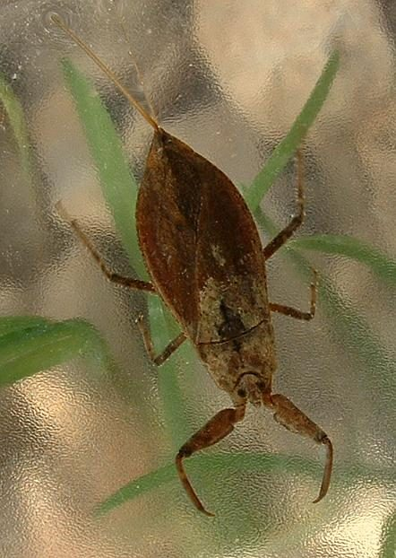

पानी का बिच्छूWater Scorpion
Laccotrephes maculatus · Nepidae · INS-0109

- Scientific name वैज्ञानिक नाम
- Laccotrephes maculatus (Fabricius, 1803)
- Family कुल
- Nepidae
- Hindi हिंदी
- पानी का बिच्छू
- Local names स्थानीय नाम
- pani ka bichhu, pani ka bichchhu, water scorpion
- Status here यहाँ की स्थिति
- native
- Movement आवागमन
- Resident, here all year
- IUCN IUCN
- not evaluated
- Review समीक्षा
- audited and independently read
When to look कब देखें
Present all year. साल भर मौजूद।
Uses and possibilities उपयोग और संभावनाएँ
Drawn from the documented uses in the profile below, where each is labelled traditional, current or a research lead. All uses →
Tell it apart from इनसे अलग पहचानें
पानी का बिच्छू / Water Scorpion
Laccotrephes maculatus (Fabricius, 1803) — Nepidae
पानी का बिच्छू — तालाब की घास और पानी की पौधों के बीच छिपी रहने वाली एक पतली, लंबी, भूरी बग, बिल्कुल पानी की शाखा जैसी। इसके शरीर के पिछले हिस्से से एक लंबी, पतली सूई जैसी पूँछ निकली होती है — यह साँस की नली है, न कि डंक। इसका नाम "पानी का बिच्छू" है पर यह बिच्छू नहीं, बग है। यह घात में बैठी रहती है, और मच्छर का लार्वा, छोटी मछली, या जलीय कीड़े के पास आते हैं तो छिपकर पकड़ लेती है।
Quick Identification त्वरित पहचान
| Feature | Description |
|---|---|
| Size | Body length 30–45 mm; with breathing tube projecting up to 10 mm more |
| Shape | Elongate, thin, stick-like; mimics aquatic plant stems |
| Colour | Brown to dark olive-brown, sometimes mottled; cryptic |
| Breathing tube | Long, thin, thread-like, projecting from the abdomen; used as a snorkel |
| Front legs | Raptorial, held in an S-shape, ready to strike |
| Movement | Slow and deliberate; remains still for long periods |
| Behaviour | Camouflaged among vegetation; hunts by ambush |
Field tip: In a weedy pond, a thin brown stick among the vegetation that suddenly moves — that is a water scorpion. The long thread-like tail distinguishes it from a backswimmer. It lies head-down, moving little, waiting to strike at passing prey.
हिंदी — कैसे पहचानें: तालाब की घास में पतली, भूरी, घास की तरह दिखने वाली बग। पीछे से लंबी सूई जैसी नली निकली होती है, जो साँस लेने के लिए पानी की सतह तक जाती है।
Morphology आकारिकी
Biometrics:
| Measurement | Range |
|---|---|
| Body length (without breathing tube) | 30–45 mm |
| Breathing tube length | 8–10 mm |
| Body width | 4–6 mm |
Structure: Body elongate and slender, flattened slightly dorsoventrally, brown to dark brown. Head small, with large compound eyes and a short, thick, curved rostrum (feeding tube). Thorax narrow and elongate. Abdomen with two long antennae-like filaments projecting from the terminal segment; these form a tube with a fine slit running along them, through which air is drawn to the spiracles. Front legs short and robust, with raptorial claws; middle and hind legs are flattened and adapted for clinging to vegetation.
Cryptic coloration: The brown, mottled coloration and slender form closely mimic submerged vegetation stems, making the insect difficult to spot.
Behaviour & Ecology व्यवहार और पारिस्थितिकी
An ambush predator of aquatic animals, remaining motionless among vegetation with the body head-down and the breathing tube extended to the surface. Any movement of small prey — mosquito larvae, small fish, tadpoles, or other aquatic insects — triggers a rapid strike using the raptorial front legs. The feeding rostrum is then used to pierce the prey and suck its body contents.
The water scorpion is solitary and territorial. In the monsoon, adults may fly short distances between water bodies at dusk, probably seeking mates or better habitat. They are themselves preyed upon by larger fish, frogs, and water birds.
हिंदी: घास में सिर नीचे, साँस की नली पानी की सतह पर; घंटों ख़ामोश बैठी रहती है। कोई छोटा कीड़ा या मछली आए तो बिजली की गति से पकड़ लेती है।
Life Cycle / Phenology जीवन चक्र
| Month / season | Event |
|---|---|
| March–May | Adults active and feeding as water warms |
| April–September | Mating; females lay eggs in stems or on substrates inside the water |
| 1–2 weeks | Eggs hatch; nymphs resemble miniature adults but lack fully formed breathing tube |
| 2–3 months | Nymphs undergo five instars; breathing tube develops gradually |
| September–October | Final instars and emergence of new adults |
| November–February | Adults remain in water, less active in cold |
Host Plants or Prey आहार
Prey (all stages):
- Mosquito larvae (Culex, Anopheles, Aedes)
- Chironomid larvae (midges)
- Mayfly and dragonfly nymphs
- Small tadpoles and newly metamorphosed froglets
- Small fish fry and fingerlings
- Other aquatic insects and small crustaceans
Predators / Natural Enemies शत्रु
- Fish: rohu, catfish, and other predatory fish
- Amphibians: large frogs and toads
- Aquatic insects: larger dragonfly nymphs, diving beetles, and giant water bugs
- Birds: herons, kingfishers, and water birds
- Parasites: parasitoid flies and mites
Agricultural / Human Relevance कृषि प्रासंगिकता
Mosquito control. Water scorpions are effective predators of mosquito larvae and are sometimes considered beneficial insects for disease vector control. However, they are not selective predators and will also feed on fish fry and other aquatic fauna.
Not biting. The common name "water scorpion" and the threat-posture of raising the front legs lead some people to believe it can sting. It cannot. The breathing tube is not a sting, and the creature is harmless to humans.
Fish farming. In nursery ponds, they may take fish fry, but in mature ponds their impact is minor. Their presence indicates a healthy aquatic community.
Traditional and Ethnobotanical Use: none recorded for the region.
Today. Generally left undisturbed in ponds, where it helps control mosquitoes.
Research direction (a lead, not a result). The relative predatory efficiency of Laccotrephes compared to dragonfly nymphs and other aquatic predators for mosquito larvae control has not been well documented for eastern UP.
हिंदी: मच्छर के लार्वे खाता है; नर्सरी में छोटी मछलियाँ भी खा लेता है। हाँ, यह काटता नहीं है और न डंक मारता है; पूँछ साँस की नली है।
Expected Locally स्थानीय रूप से अपेक्षित
Not a field record. Written from published accounts for eastern Uttar Pradesh. No confirmed local sighting yet — if you have seen it, that is what the atlas needs.
अभी तक स्थानीय पुष्टि नहीं। यह विवरण प्रकाशित स्रोतों से है, किसी अवलोकन से नहीं।
Expected in weedy ponds and marshes throughout Basti district, particularly where emergent and submerged vegetation is thick. The breathing tube extending to the surface is the easiest way to spot it. Most common in spring and monsoon. A photograph or specimen showing the breathing tube and raptorial front legs is a confirmed record.
Distribution वितरण
Global range: Asia from India through South-east Asia to southern China and Australia.
In India: Widespread in wetland habitats throughout the plains and lower hills.
In Uttar Pradesh: Common in ponds, marshes and wetlands.
In Basti district / eastern UP: Expected in every weedy pond and wetland.
Research Questions शोध प्रश्न
- How many water scorpions are in a pond with dense vegetation, and how does the number change seasonally? / एक तालाब में कितने होते हैं? — Dip-net and search vegetation at regular intervals.
- How much time does it spend motionless before striking? — Observe one in a jar.
- How many mosquito larvae can one eat in a day? — Keep one in a container with known larvae.
- Does the breathing tube always touch the surface, or can it feed completely submerged? / क्या बिल्कुल पानी के अंदर रह सकता है? — Observe with careful cover.
- What colours of vegetation does it prefer for camouflage? — Check different plant types.
Similar Species मिलती-जुलती प्रजातियाँ
| Species | How to tell apart | हिंदी |
|---|---|---|
| Backswimmer (Anisops) | Smaller (5–16 mm); swims upside-down with belly to surface; no breathing tube | पीठ के बल तैरता है; छोटा; साँस की नली नहीं |
| Aquatic plant stem | Dead stem (no eyes, no movement) | गई पत्ती — आँखें नहीं, हरकत नहीं |
| Other Nepidae species | Vary in size and breathing tube length; detailed separation requires expert examination | बड़े-छोटे होते हैं; विशेषज्ञ से पहचानें |
Field rule: A thin brown insect 30–45 mm long, with a long thread-like breathing tube projecting from the tail, camouflaged among aquatic vegetation in a pond, is a water scorpion.
Taxonomy & Classification वर्गीकरण
Original description. Described by Fabricius as Nepa maculata in 1803 in Systema Rhyngotorum. The species name refers to the mottled pattern; Laccotrephes means "pool-dwelling."
Subspecies. Monotypic — no subspecies are currently recognised.
Family and order placement. Nepidae (water scorpions), order Hemiptera, suborder Heteroptera. The Nepidae are sister to the Notonectidae (backswimmers) and are among the most specialized of aquatic Hemiptera.
Phylogenetic notes. The breathing tube is a derived character, an adaptation to still-water hunting; the raptorial front legs are homologous with those of mantises and giant water bugs.
IUCN status rationale. Not evaluated. Widespread and common in suitable wetland habitats.
Photo Gallery फोटो गैलरी
Photos needed आवश्यक फोटो
- [ ] Adult among aquatic vegetation showing breathing tube (घास में)
- [ ] Close-up of head and raptorial front legs (सिर से)
- [ ] Breathing tube at the water surface (नली पानी की सतह पर)
No photos yet — add field photos to media/species/water_scorpion/ and run node scripts/sync_photos.js.
References संदर्भ
- Fabricius, J.C. (1803). Systema Rhyngotorum. Brunsvigae, Apud Reichard. [original description as Nepa maculata]
- Distant, W.L. (1906). The Fauna of British India, including Ceylon and Burma. Rhynchota, vol. 3. Taylor and Francis, London.
- Bourne, G.C. (1901). Notes on the aquatic Hemiptera of the Indian region. Journal of the Asiatic Society of Bengal 70: 167–195.
- Thirumalai, G. (2007). A synoptic list of Nepomorpha (Hemiptera: Heteroptera) from India. Records of the Zoological Survey of India, Occasional Paper 273: 1–84.
- Chatterjee, S. & Mondal, S. (2015). Aquatic Hemiptera of West Bengal, India: Taxonomy, Distribution and Bionomics. Records of the Zoological Survey of India 115(4): 363–380.
- GBIF Occurrence Data — Laccotrephes maculatus, India (2026).
Source file: species/fauna/insects/water_scorpion.md